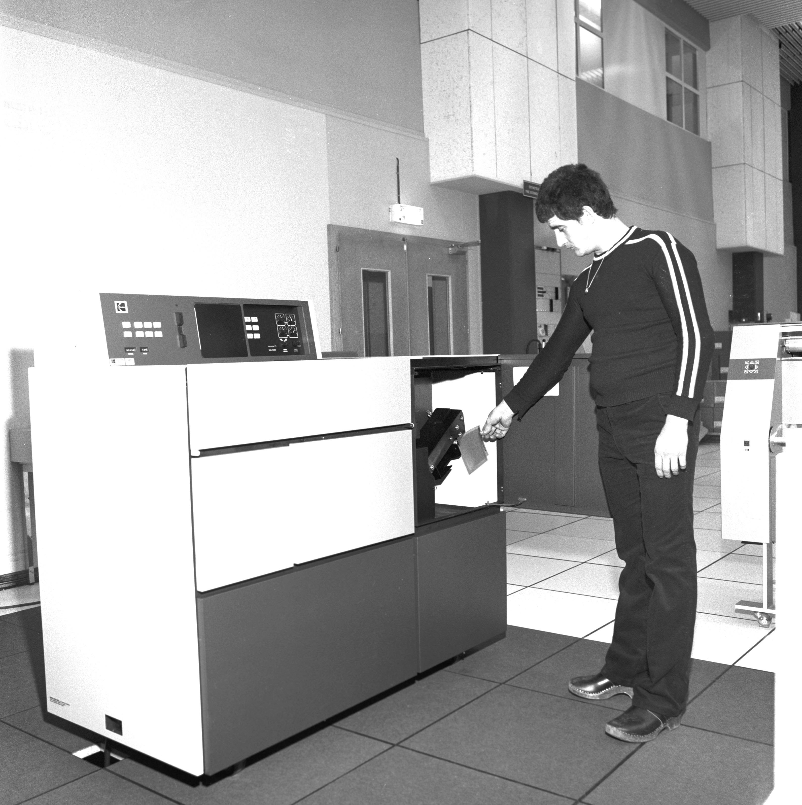

1977
Eastman Kodak Company (Rochester, New York)
Kodak Komstar 200 Computer Output Microfilm Recorder
The printer that made your reports invisible — a laser that drew data onto postcard-sized film at 120,000 characters a second
